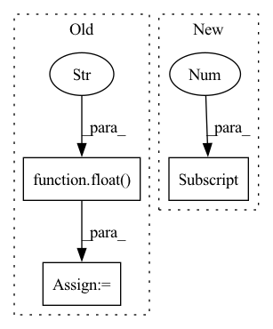

Pattern ID :6571

Before Change
// OPTIMIZER
optimizer = torch.optim.Adam(params=pred_model.parameters(), lr=LEARNING_RATE)
min_loss = float("inf")
timestamp = int(1000000 * time.time())
out_dir = Path("out/{}_pred_model".format(timestamp))
out_dir.mkdir(parents=True)
After Change
train_loader = DataLoader(train_data, batch_size=BATCH_SIZE, shuffle=True, num_workers=BATCH_SIZE)
valid_loader = DataLoader(val_data, batch_size=1, shuffle=False, num_workers=4)
vid_type = (cfg.in_type, train_data[0].shape[2]) // (type, num_channels)
// MODEL
train_model = True
In pattern: SUPERPATTERN
Frequency: 3
Non-data size: 3
Instances
Fragment ID: 22871404
Project Name: ais-bonn/vp-suite
Commit Name: e8bc00f79b082143c30123e0a0283c6ff9e79a8f
Time: 2021-07-22
Author: boltres@ais.uni-bonn.de
File Name: train_pred_model.py
M Class Name: AnonimousClass
N Class Name: AnonimousClass
M Method Name: main(1)
N Method Name: main(1)
M Parent Class:
N Parent Class:
M File Name: train_pred_model.py
N File Name: train_pred_model.py
M Start Line: 27
M End Line: 94
N Start Line: 21
N End Line: 127
'>
Before Change
def from_cfg(cls, X_or_y: RawDataset, cfg: CN) -> "MinMaxScaler":
num_instances = len(X_or_y)
num_feats = X_or_y[0].size(-1)
min_v = torch.zeros(num_feats) + float("inf")
max_v = torch.zeros(num_feats) - float("inf")
for i in range(num_instances):
min_v = torch.minimum(min_v, X_or_y[i])
max_v = torch.maximum(max_v, X_or_y[i])
scaler = cls(min_v, max_v, cfg)
return scaler
After Change
def from_cfg(cls, X_or_y: RawDataset, cfg: CN) -> "MinMaxScaler":
X_or_y_new = torch.cat(X_or_y)
min_v = X_or_y_new.min(0)[0]
max_v = X_or_y_new.max(0)[0]
scaler = cls(min_v, max_v, cfg)
return scaler
def transform(self, X_or_y: RawDataset) -> RawDataset:
'>
Fragment ID: 22871400
Project Name: takuyashintate/tsts
Commit Name: 10967505eec6c9221e3c85d7db61d021753279ed
Time: 2021-08-24
Author: kmdbn2hs@gmail.com
File Name: tsts/scalers/minmax.py
M Class Name: MinMaxScaler
N Class Name: MinMaxScaler
M Method Name: from_cfg(3)
N Method Name: from_cfg(3)
M Parent Class: Scaler
N Parent Class: Scaler
M File Name: tsts/scalers/minmax.py
N File Name: tsts/scalers/minmax.py
M Start Line: 42
M End Line: 49
N Start Line: 42
N End Line: 44
'>
Before Change
weights = torch.ones_like(pre_dist_mat)
// init random coords
best_stress = float("Inf") * torch.ones(batch, device = device).type(dtype)
best_3d_coords = 2*torch.rand(batch, N, 3, device = device).type(dtype) - 1
// iterative updates:
for i in range(iters):
After Change
if verbose >= 2:
print("it: %d, stress %s" % (i, stress))
// update metrics if relative improvement above tolerance
if (his[-1] - stress / dis).mean() <= tol:
if verbose:
print("breaking at iteration %d with stress %s" % (i,
stress / dis))
'>
Fragment ID: 22871401
Project Name: lucidrains/alphafold2
Commit Name: bc8963412e0b2798b1b8de533b52342543c7b8e0
Time: 2021-04-25
Author: ericalcaide1@gmail.com
File Name: alphafold2_pytorch/utils.py
M Class Name: AnonimousClass
N Class Name: AnonimousClass
M Method Name: mds_torch(6)
N Method Name: mds_torch(6)
M Parent Class:
N Parent Class:
M File Name: alphafold2_pytorch/utils.py
N File Name: alphafold2_pytorch/utils.py
M Start Line: 653
M End Line: 695
N Start Line: 649
N End Line: 692